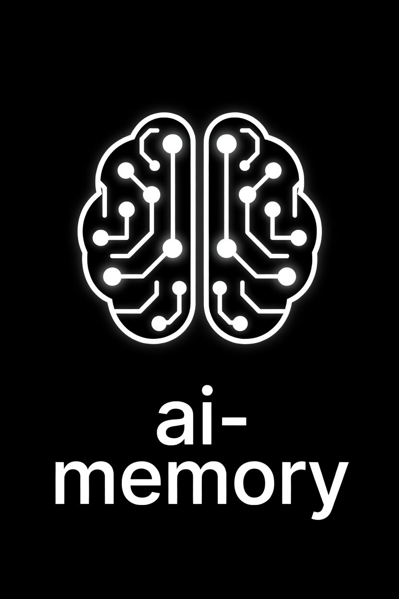

BLUF — Bottom Line Up Front
ai-memory replaces AI vendors' built-in memory features. Disable AI vendor memory to stop paying for idle context tokens wasted on every message. A moderate end user wastes ~11M input tokens per year on memory context loaded into every single message whether needed or not — via vendor AI auto memory or similar AI vendor memory facilities.
Zero token cost until recalled.
Built-in memory systems load your entire memory into every message. ai-memory uses zero context tokens until the AI calls memory_recall — only relevant memories come back, ranked and compressed via TOON format (79% smaller than JSON).
Works with Claude · ChatGPT · Grok CLI · Grok API · Cursor · Windsurf · Continue.dev · OpenClaw · Llama · any MCP client
LongMemEval Benchmark (ICLR 2025) — 500 questions, 6 categories
Pure SQLite FTS5 + BM25 — zero cloud dependencies — full benchmark details & replication steps
MCP is the universal integration layer. The HTTP API works with literally anything that can make a request. No vendor lock-in.
Anthropic's Claude Code, Claude Desktop, and any Claude-based tool
MCP NativeOpenAI's Codex command-line agent with TOML-based MCP config
MCP NativeGoogle's Gemini CLI with JSON-based MCP server configuration
MCP NativeAI-powered code editor with built-in MCP support
MCP NativeCodeium's AI IDE with MCP tool integration
MCP NativeOpen-source AI code assistant with YAML-based MCP config
MCP NativeGrok API and xAI-based applications via remote MCP
Remote MCP (HTTPS)Llama Stack toolgroup registration via HTTP server
HTTP / MCPSelf-hosted AI assistant with MCP via mcp.servers config
Any tool that speaks the Model Context Protocol -- present or future
UniversalMCP = native tool integration (stdio JSON-RPC) | HTTP = REST API on localhost:9077 (works with anything) | CLI = shell commands (scriptable, pipeable)
One command. No dependencies for pre-built binaries. Eight installation methods.
Pre-built binary. Auto-detects OS & architecture.
curl -fsSL https://raw.githubusercontent.com/alphaonedev/ai-memory-mcp/main/install.sh | shPowerShell installer. Adds to PATH automatically.
irm https://raw.githubusercontent.com/alphaonedev/ai-memory-mcp/main/install.ps1 | iexNative apt package. Auto-updates with system.
sudo add-apt-repository ppa:jbridger2021/ai-memory
sudo apt update
sudo apt install ai-memoryNative dnf package. Auto-updates with system.
sudo dnf copr enable alpha-one-ai/ai-memory
sudo dnf install ai-memoryTap formula. Pre-built binary, no compile.
brew install alphaonedev/tap/ai-memoryContainerized HTTP server on port 9077.
docker build -t ai-memory .
docker run -p 9077:9077 -v data:/data ai-memoryPre-built binary via cargo. No compile step.
cargo binstall ai-memorySupported platforms: macOS (Intel + Apple Silicon) • Linux (x86_64 + ARM64) • Windows (x86_64) • WSL • Docker
Build from source?
Ubuntu/Debian: sudo apt install build-essential pkg-config •
Fedora/RHEL: sudo dnf install gcc pkg-config •
macOS: Xcode CLT (pre-installed) •
Windows: MSVC C++ build tools
The keyword and semantic tiers work with zero dependencies. The smart and autonomous tiers add LLM-powered query expansion, auto-tagging, and neural reranking via Ollama.
The smart and autonomous tiers use local LLMs via Ollama for query expansion, auto-tagging, contradiction detection, and cross-encoder reranking. Skip this step if you only need keyword or semantic search.
# Install via Homebrew
brew install ollama
# Or download the macOS app:
# https://ollama.com/download/mac
# Start the Ollama service
ollama serve &
# (or launch the Ollama.app -- it runs as a menu bar item)
# Pull models for your tier
ollama pull nomic-embed-text # Embeddings (smart+)
ollama pull gemma4:e2b # LLM — Smart (~1GB)
ollama pull gemma4:e4b # LLM — Autonomous (~2.3GB)# One-line install script
curl -fsSL https://ollama.com/install.sh | sh
# Enable and start the systemd service
sudo systemctl enable ollama
sudo systemctl start ollama
# Pull models for your tier
ollama pull nomic-embed-text # Embeddings (smart+)
ollama pull gemma4:e2b # LLM — Smart (~1GB)
ollama pull gemma4:e4b # LLM — Autonomous (~2.3GB)# Install via winget
winget install Ollama.Ollama
# Or download the installer:
# https://ollama.com/download/windows
# Ollama runs as a system service after install
# Pull models for your tier
ollama pull nomic-embed-text # Embeddings (smart+)
ollama pull gemma4:e2b # LLM — Smart (~1GB)
ollama pull gemma4:e4b # LLM — Autonomous (~2.3GB)# Check Ollama is running and models are available
curl http://localhost:11434/api/tags
ollama run gemma4:e2b "Hello, world" # Should respond in ~1sai-memory connects to Ollama at localhost:11434 automatically. Override with ollama_url in ~/.config/ai-memory/config.toml or --ollama-url flag. If Ollama is unavailable, ai-memory gracefully falls back to the semantic tier.
Choose the integration method that fits your setup.
Claude Code MCP Configuration Scopes:
| Scope | File | Applies to |
|---|---|---|
| User (global) | ~/.claude.json | All projects on your machine |
| Project (shared) | .mcp.json in project root | Everyone on the project (via git) |
| Local (private) | ~/.claude.json under projects | One project, just you |
User scope (recommended) — merge mcpServers into your existing ~/.claude.json (macOS/Linux) or %USERPROFILE%\.claude.json (Windows):
{
"mcpServers": {
"memory": {
"command": "ai-memory",
"args": ["--db", "~/.claude/ai-memory.db", "mcp", "--tier", "semantic"]
}
}
}jsonRestart Claude Code. It will discover all 17 memory tools natively. No daemon, no ports. MCP servers do not go in settings.json or settings.local.json. The --tier flag is required — options: keyword, semantic (default), smart, autonomous. Smart/autonomous require Ollama.
Windows: Use ai-memory.exe for the command and forward slashes in paths: "C:/Users/YourName/.claude/ai-memory.db"
OpenAI Codex CLI Configuration Scopes:
| Scope | File | Applies to |
|---|---|---|
| Global (user) | ~/.codex/config.toml | All projects on your machine |
| Project | .codex/config.toml in project root | Trusted projects only |
Windows: %USERPROFILE%\.codex\config.toml. Override config dir with CODEX_HOME env var.
# OpenAI Codex CLI MCP configuration
[mcp_servers.memory]
command = "ai-memory"
args = ["--db", "~/.local/share/ai-memory/memories.db", "mcp", "--tier", "semantic"]
enabled = truetomlCLI shortcut: codex mcp add memory -- ai-memory --db ~/.local/share/ai-memory/memories.db mcp --tier semantic
Codex uses TOML with underscored key mcp_servers (not camelCase). Supports env, env_vars, enabled_tools, disabled_tools, startup_timeout_sec, tool_timeout_sec. Use /mcp in the TUI to view server status. Windows/WSL: WSL uses Linux home by default — set CODEX_HOME to share config with Windows host. See Codex MCP docs.
Google Gemini CLI Configuration Scopes:
| Scope | File | Applies to |
|---|---|---|
| User (global) | ~/.gemini/settings.json | All projects on your machine |
| Project | .gemini/settings.json in project root | Scoped to that project |
Windows: %USERPROFILE%\.gemini\settings.json. Env vars: $VAR / ${VAR} (all platforms), %VAR% (Windows).
{
"mcpServers": {
"memory": {
"command": "ai-memory",
"args": ["--db", "~/.local/share/ai-memory/memories.db", "mcp", "--tier", "semantic"],
"timeout": 30000
}
}
}jsonCLI shortcut: gemini mcp add memory ai-memory -- --db ~/.local/share/ai-memory/memories.db mcp --tier semantic
Avoid underscores in server names (use hyphens). Tool names are auto-prefixed as mcp_memory_<toolName>. Env vars in env field support $VAR / ${VAR} (all platforms) and %VAR% (Windows). Gemini sanitizes sensitive patterns (*TOKEN*, *SECRET*) from inherited env unless declared. Add "trust": true to skip confirmation. CLI: gemini mcp list/remove/enable/disable. See Gemini CLI MCP docs.
Cursor IDE Configuration Scopes:
| Scope | File | Applies to |
|---|---|---|
| Global (user) | ~/.cursor/mcp.json | All projects on your machine |
| Project | .cursor/mcp.json in project root | Overrides global for same-named servers |
Windows: %USERPROFILE%\.cursor\mcp.json. Also configurable via Settings > Tools & MCP.
{
"mcpServers": {
"memory": {
"command": "ai-memory",
"args": ["--db", "~/.local/share/ai-memory/memories.db", "mcp", "--tier", "semantic"]
}
}
}jsonOr add via Cursor Settings > Tools & MCP. Restart Cursor after editing. Verify with green dot in Settings. Supports env, envFile, ${env:VAR_NAME} interpolation (can be unreliable for shell profile vars — use envFile as workaround). ~40 tool limit across all servers. See Cursor MCP docs.
Windsurf (Codeium) Configuration Scopes:
| Scope | File | Applies to |
|---|---|---|
| Global only | ~/.codeium/windsurf/mcp_config.json | All projects (no project scope) |
Windows: %USERPROFILE%\.codeium\windsurf\mcp_config.json. Also configurable via MCP Marketplace or Settings > Cascade > MCP Servers.
{
"mcpServers": {
"memory": {
"command": "ai-memory",
"args": ["--db", "~/.codeium/windsurf/ai-memory.db", "mcp", "--tier", "semantic"]
}
}
}jsonSupports ${env:VAR_NAME} interpolation in command, args, env, serverUrl, url, and headers. 100 tool limit across all servers. Can also add via MCP Marketplace or Settings > Cascade > MCP Servers. See Windsurf MCP docs.
Continue.dev Configuration Scopes:
| Scope | File | Applies to |
|---|---|---|
| User (global) | ~/.continue/config.yaml | All projects on your machine |
| Project | .continue/mcpServers/ dir in project root | Per-server YAML/JSON files |
Windows: %USERPROFILE%\.continue\config.yaml. Project dir auto-detects JSON configs from other tools.
# Continue.dev MCP configuration
mcpServers:
- name: memory
command: ai-memory
args:
- "--db"
- "~/.continue/ai-memory.db"
- "mcp"
- "--tier"
- "semantic"yamlMCP tools only work in agent mode. Supports ${{ secrets.SECRET_NAME }} for secret interpolation. Project-level .continue/mcpServers/ directory auto-detects JSON configs from other tools (Claude Code, Cursor, etc.). See Continue MCP docs.
Grok CLI (AlphaOne fork) — Deep Integration:
| Scope | Config File | Applies to |
|---|---|---|
| User-level | ~/.grok/user-settings.json | All sessions |
// ~/.grok/user-settings.json
{
"mcp": {
"servers": [
{
"id": "ai-memory",
"label": "AI Memory",
"enabled": true,
"transport": "stdio",
"command": "ai-memory",
"args": ["mcp", "--tier", "semantic"]
}
]
}
}jsonDeep integration features: Auto-recall on session start (injects relevant memories into system prompt), compaction summaries auto-stored as mid-tier memories, MCP tools available in all modes (agent, plan, ask), session-scoped connections (binary spawns once per session, not per message). Default tier semantic uses local MiniLM embeddings — no Ollama required. Install: curl -fsSL https://raw.githubusercontent.com/alphaonedev/grok-cli/main/install.sh | bash
xAI Grok API Configuration:
| Scope | Method | Applies to |
|---|---|---|
| Per-request | API tools array (no config file) | Each API call individually |
Remote HTTPS only (no stdio). Start ai-memory behind an HTTPS reverse proxy.
# Step 1: Start the ai-memory HTTP server
ai-memory serve --host 127.0.0.1 --port 9077 &
# Expose via HTTPS reverse proxy (nginx, caddy, cloudflare tunnel, etc.)
# Step 2: Add the MCP server to your Grok API call
curl https://api.x.ai/v1/responses \
-H "Authorization: Bearer $XAI_API_KEY" \
-H "Content-Type: application/json" \
-d '{
"model": "grok-3",
"tools": [{
"type": "mcp",
"server_url": "https://your-server.example.com/mcp",
"server_label": "memory",
"server_description": "Persistent AI memory with recall and search"
}],
"input": "What do you remember about our project?"
}'bashHTTPS required. server_label is required. Supports Streamable HTTP and SSE transports. Optional: allowed_tools, authorization, headers. Works with xAI SDK, OpenAI-compatible Responses API, and Voice Agent API. See xAI Remote MCP docs.
META Llama Stack Configuration:
| Scope | Method | Applies to |
|---|---|---|
| Declarative | run.yaml — tool_groups section | Deployment-wide (supports ${env.VAR}) |
| Programmatic | Python/Node SDK — toolgroups.register() | Runtime registration |
Llama Stack uses toolgroup registration with an HTTP backend.
# Step 1: Start the ai-memory HTTP server
ai-memory serve --host 127.0.0.1 --port 9077 &
# Step 2: Register as a Llama Stack toolgroup
# In your Llama Stack config, register the MCP endpoint:
# toolgroup: ai-memory
# provider: remote::mcp-endpoint
# url: http://127.0.0.1:9077
# Or use the REST API directly in custom tool definitions:
# POST /api/v1/memories, GET /api/v1/recall, etc.bashMETA Llama uses Llama Stack for tool registration. Run ai-memory serve and register as a toolgroup via Python SDK or run.yaml (supports ${env.VAR_NAME} interpolation). Transport migrating from SSE to Streamable HTTP. See Llama Stack Tools docs.
OpenClaw Configuration:
| Scope | File | Applies to |
|---|---|---|
| Single config | Platform config file | All projects (single config file) |
Important: OpenClaw uses mcp.servers (NOT mcpServers). The key structure is different from most other platforms.
{
"mcp": {
"servers": {
"memory": {
"command": "ai-memory",
"args": ["--db", "~/.local/share/ai-memory/memories.db", "mcp", "--tier", "semantic"]
}
}
}
}jsonCLI shortcut:
openclaw mcp set memory '{"command":"ai-memory","args":["--db","~/.local/share/ai-memory/memories.db","mcp","--tier","semantic"]}'bashManagement: openclaw mcp list · openclaw mcp show <name> · openclaw mcp unset <name>. See OpenClaw MCP docs.
Generic MCP Client Configuration:
| Transport | Method | Details |
|---|---|---|
| stdio | ai-memory mcp | JSON-RPC 2.0, spawned by AI client |
| HTTP | ai-memory serve | REST API on localhost:9077 |
Point your MCP client at the ai-memory binary with the mcp subcommand:
{
"mcpServers": {
"memory": {
"command": "ai-memory",
"args": ["--db", "path/to/memory.db", "mcp", "--tier", "semantic"]
}
}
}jsonThe MCP server exposes 26 tools over stdio using JSON-RPC. Any client that speaks MCP will discover them automatically. Adjust the --db path to your preferred location.
Check that your AI has access to memory tools.
# MCP: Ask your AI "What memory tools do you have?"
# HTTP: curl http://127.0.0.1:9077/api/v1/health
# CLI: ai-memory statstextMake Claude Code proactively use ai-memory in every conversation. Works with both Claude Code CLI and Claude Code Desktop.
Add to ~/.claude.json (user scope) so ai-memory is available in every project:
{
"mcpServers": {
"memory": {
"command": "ai-memory",
"args": ["--db", "~/.claude/ai-memory.db",
"mcp", "--tier", "semantic"]
}
}
}jsonThis gives Claude 17 native memory tools. No daemon, no ports.
Stop paying for 200+ lines of built-in memory context on every message:
// ~/.claude/settings.json
{
"autoMemoryEnabled": false
}jsonai-memory uses zero tokens until explicitly recalled — far more efficient than auto-memory.
Add a CLAUDE.md to your project root so Claude proactively uses ai-memory:
# Project — Claude Instructions
## AI Memory (MANDATORY)
Use `ai-memory` for persistent memory.
### On every conversation start:
1. Run ai-memory recall "<topic>"
2. Recall related memories for prior work
### While working:
- Store findings and decisions as they happen
- Use namespace `my-project`
### When finishing:
- Store a summary of what was donemarkdownWithout CLAUDE.md, Claude has the memory tools (via MCP) but may not use them unless explicitly asked. The CLAUDE.md file is read at the start of every conversation — it instructs Claude to recall context before starting work and store findings as it goes. This turns ai-memory from a passive tool into an active memory system that Claude uses autonomously.
<project>/CLAUDE.md | Project-wide (default) |
<subfolder>/CLAUDE.md | Subdirectory scope |
~/.claude/CLAUDE.md | User-global (all projects) |
Both Claude Code CLI and Claude Code Desktop read the same CLAUDE.md files and use the same MCP configuration. No separate setup needed — one configuration works for both.
Use MCP + CLAUDE.md together. MCP gives Claude the tools; CLAUDE.md tells Claude when and how to use them. Session hooks (hooks/session-start.sh) provide an optional third layer of auto-recall.
# Project — Claude Instructions
## AI Memory (MANDATORY)
Use `ai-memory` for persistent memory across conversations. This is NOT optional.
### On every conversation start:
1. Run `ai-memory recall "<topic>"` to check for relevant context before starting work
2. If the user references prior work, recall related memories first
### While working:
- Store important findings, decisions, and bug fixes as they happen — don't wait until the end
- Use namespace `my-project` for all project memories
- Default tier: `long`, default priority: `5` (use `9-10` for critical knowledge)
### When finishing work:
- Store a memory summarizing what was done, why, and any gotchas for next time
- Update existing memories if your work changes previously recorded facts
### Quick reference:
```bash
ai-memory recall "search query" # fuzzy search
ai-memory search "exact keywords" # precise match
ai-memory store -T "Title" -n my-project -t long -p 5 -c "content" # store
ai-memory update <id> -c "new content" # update
ai-memory list -n my-project # browse
```markdownEvery capability at a glance. 4 feature tiers (keyword to autonomous), 17 MCP tools, three interfaces, one shared database. Works with any AI that supports MCP or HTTP.
Built-in memory systems (Claude auto-memory, ChatGPT memory) load your entire memory into every conversation -- burning tokens and money on every message. ai-memory uses zero context tokens until recalled. Only relevant memories come back, ranked by score. Replace auto-memory and stop paying for 200+ lines of idle context.
Save memories with a title, content, tier, tags, and priority. Recall them later with fuzzy search that ranks results by 6 factors including recency decay.
Short (6h), mid (7d), and long (permanent). Memories auto-promote to long-term after 5 accesses. TTL extends on every recall.
SQLite FTS5 for keyword search plus vector embeddings for semantic similarity. Hybrid recall blends both FTS5 and cosine similarity for best-of-both-worlds relevance.
Scale from zero-dependency keyword search to full autonomous memory management. Each tier adds capabilities: keyword, semantic, smart, and autonomous.
Connect memories with typed relations: related_to, supersedes, contradicts, derived_from. Resolve contradictions with a single command.
Smart and autonomous tiers use Ollama (Gemma 4) for query expansion, auto-tagging, auto-consolidation, cross-encoder reranking, and contradiction analysis.
Token-Oriented Object Notation eliminates repeated field names in recall responses. Pass format: "toon" for 61% fewer bytes or "toon_compact" for 79% fewer. Field names declared once as a header, values as pipe-delimited rows. LLMs parse it natively.
Two MCP prompts teach AI clients to use memory proactively. recall-first: 9 behavioral rules (recall at start, store corrections, TOON format, tier strategy, dedup). memory-workflow: quick reference card for all tool patterns. AI clients receive these at connection time via prompts/list.
Each tier builds on the one below it. Choose based on your resources and needs. Set via ai-memory mcp --tier <name> or in ~/.config/ai-memory/config.toml.
| Tier | RAM | Embedding Model | LLM | Dependencies | Key Features |
|---|---|---|---|---|---|
| keyword | 0 MB | — | — | None | FTS5 full-text search, 13 MCP tools |
| semantic | ~256 MB | all-MiniLM-L6-v2 (384-dim, local via Candle) | — | None (model auto-downloads ~90MB) | + Hybrid recall (FTS5 + cosine similarity), HNSW vector index, 14 MCP tools |
| smart | ~1 GB | nomic-embed-text-v1.5 (768-dim, via Ollama) | Gemma 4 E2B (~1GB) | Ollama | + LLM query expansion, auto-tagging, auto-consolidation, 17 MCP tools |
| autonomous | ~4 GB | nomic-embed-text-v1.5 (768-dim, via Ollama) | Gemma 4 E4B (~2.3GB) | Ollama | + Neural cross-encoder reranking (ms-marco-MiniLM), contradiction analysis, 17 MCP tools |
Pure SQLite FTS5 full-text search. Zero ML dependencies, zero memory overhead. The binary is entirely self-contained. Ideal for low-resource environments, CI runners, or when you just need fast text matching.
Adds dense vector embeddings via all-MiniLM-L6-v2 (384-dim), loaded locally through the Candle ML framework. Recall blends FTS5 keyword scores with cosine similarity using adaptive content-length weighting (50/50 for short memories, 85/15 FTS-weighted for long content). HNSW index for fast approximate nearest-neighbor search. The model auto-downloads from HuggingFace on first run (~90MB).
Upgrades to nomic-embed-text-v1.5 (768-dim) via Ollama for higher-quality embeddings. Adds an on-device LLM (Gemma 4 Effective 2B) that powers three new tools: memory_expand_query (semantic query broadening), memory_auto_tag (content-aware tagging), and memory_detect_contradiction (conflict detection). Requires Ollama running locally.
Upgrades the LLM to Gemma 4 Effective 4B for more nuanced reasoning. Adds a neural cross-encoder reranker (ms-marco-MiniLM-L-6-v2) that re-scores (query, document) pairs after hybrid retrieval for significantly better recall precision. Full autonomous memory reflection and contradiction resolution. Requires Ollama.
Every capability mapped to its minimum tier. Each tier includes all capabilities from the tiers below it.
| Capability | keyword | semantic | smart | autonomous |
|---|---|---|---|---|
| Search & Recall | ||||
FTS5 keyword search (memory_search) | Yes | Yes | Yes | Yes |
| Semantic embedding (cosine similarity) | — | Yes | Yes | Yes |
| Hybrid recall (FTS5 + cosine, adaptive blend) | — | Yes | Yes | Yes |
| HNSW approximate nearest-neighbor index | — | Yes | Yes | Yes |
LLM query expansion (memory_expand_query) | — | — | Yes | Yes |
| Neural cross-encoder reranking (ms-marco-MiniLM) | — | — | — | Yes |
| Memory Management | ||||
| Store, update, delete, promote | Yes | Yes | Yes | Yes |
| Link memories (4 relation types) | Yes | Yes | Yes | Yes |
| Bulk forget by pattern/namespace/tier | Yes | Yes | Yes | Yes |
| Manual consolidation (user-provided summary) | Yes | Yes | Yes | Yes |
| Auto-consolidation (LLM-generated summary) | — | — | Yes | Yes |
Auto-tagging (memory_auto_tag) | — | — | Yes | Yes |
Contradiction detection (memory_detect_contradiction) | — | — | Yes | Yes |
| Autonomous memory reflection | — | — | — | Yes |
| Embedding Model | ||||
| Model | — | all-MiniLM-L6-v2 | nomic-embed-text-v1.5 | nomic-embed-text-v1.5 |
| Dimensions | — | 384 | 768 | 768 |
| Runtime | — | Candle (local) | Ollama | Ollama |
| Model size | — | ~90 MB | ~274 MB | ~274 MB |
| LLM (Language Model) | ||||
| Model | — | — | Gemma 4 Effective 2B | Gemma 4 Effective 4B |
| Ollama tag | — | — | gemma4:e2b | gemma4:e4b |
| Model size | — | — | ~7.2 GB | ~9.6 GB |
| Resources | ||||
| Total RAM | 0 MB | ~256 MB | ~1 GB | ~4 GB |
| External dependencies | None | None | Ollama | Ollama |
| MCP tools exposed | 13 | 14 | 17 | 17 |
| Ollama models to pull | — | — | nomic-embed-text + gemma4:e2b | nomic-embed-text + gemma4:e4b |
Tiers gate features, not models. The --tier flag controls which tools are exposed. The LLM model is independently configurable via llm_model in config.toml.
For example, run autonomous tier (all features) with the faster e2b model: llm_model = "gemma4:e2b" (46 tok/s vs 26 tok/s for e4b).
If Ollama is unavailable at startup, smart and autonomous tiers fall back to semantic automatically.
# ~/.config/ai-memory/config.toml
# Created automatically on first run with defaults commented out
tier = "autonomous" # keyword | semantic | smart | autonomous
db = "~/.claude/ai-memory.db" # SQLite database path
ollama_url = "http://localhost:11434" # Ollama API endpoint
llm_model = "gemma4:e2b" # independently configurable (e2b=46tok/s, e4b=26tok/s)
cross_encoder = true # Neural reranking (autonomous tier)
default_namespace = "global" # Default namespace for new memoriestomlai-memory runs as a Model Context Protocol (MCP) tool server over stdio. Any MCP-compatible AI client -- Claude, ChatGPT, Grok, Llama, or custom agents -- discovers these tools automatically.
Store a new memory. Deduplicates by title+namespace. Detects contradictions with existing memories.
Fuzzy OR search with 6-factor ranking. Auto-touches recalled memories (extends TTL, may promote).
Exact keyword AND search. Returns memories matching all terms.
Browse memories with filters: namespace, tier, tags, date range.
Retrieve a single memory by ID, including all its links.
Update an existing memory: change title, content, tier, priority, or tags.
Delete a specific memory by ID. Links cascade automatically.
Promote a memory to long-term permanent storage. Clears expiry.
Bulk delete by pattern, namespace, or tier.
Link two memories: related_to, supersedes, contradicts, or derived_from.
Get all links for a memory by ID.
Merge multiple memories into one long-term summary.
Database statistics: counts by tier, namespaces, link count, DB size.
Returns available capabilities for the current feature tier. Lets the AI discover what tools and features are active.
LLM-powered query expansion. Broadens a recall query with synonyms and related terms for better recall coverage. (smart+ tiers)
LLM-powered auto-tagging. Analyzes memory content and suggests relevant tags automatically. (smart+ tiers)
LLM-powered contradiction analysis. Compares a memory against existing memories to detect conflicts and inconsistencies. (smart+ tiers)
Start with ai-memory serve (default: http://127.0.0.1:9077).
The HTTP API works with any AI platform, any programming language, any framework. If it can make an HTTP request, it can use ai-memory.
| Method | Endpoint | Description |
|---|---|---|
| GET | /health | Deep health check (DB + FTS5 integrity) |
| GET | /memories | List memories (filter: namespace, tier, priority, date range, tags) |
| POST | /memories | Create memory (dedup on title+namespace, contradiction detection) |
| POST | /memories/bulk | Bulk create (up to 1000 items per request) |
| GET | /memories/{id} | Get memory by ID (includes links) |
| PUT | /memories/{id} | Update memory (partial update, validated) |
| DELETE | /memories/{id} | Delete memory (links cascade) |
| POST | /memories/{id}/promote | Promote memory to long-term (clears expiry) |
| GET | /search | FTS5 AND search with 6-factor ranking |
| GET | /recall | Fuzzy OR recall + touch + auto-promote |
| POST | /recall | Recall via POST body (for longer queries) |
| POST | /forget | Bulk delete by pattern/namespace/tier |
| POST | /consolidate | Merge 2-100 memories into one long-term summary |
| POST | /links | Create memory link (4 relation types) |
| GET | /links/{id} | Get all links for a memory |
| GET | /namespaces | List namespaces with counts |
| GET | /stats | Aggregate statistics |
| POST | /gc | Run garbage collection on expired memories |
| GET | /export | Export all memories + links as JSON |
| POST | /import | Import memories + links from JSON |
# Python (works with any AI backend: OpenAI, Anthropic, local Llama, etc.)
import requests
def ai_store_memory(title, content, tier="mid"):
requests.post("http://127.0.0.1:9077/api/v1/memories", json={
"title": title, "content": content, "tier": tier
})
def ai_recall(context):
r = requests.get("http://127.0.0.1:9077/api/v1/recall", params={"context": context})
return r.json()
# Use in your AI's tool/function definitions
# Works with OpenAI function calling, Anthropic tool use, etc.python
Global flags: --db <path> and --json.
Scriptable, pipeable, works in any shell. Use directly or wrap in your AI's tool layer.
| Category | Command | Description |
|---|---|---|
| Server | mcp | Run as MCP tool server over stdio (primary integration for MCP clients) |
| Server | serve | Start HTTP daemon (--host, --port, default 9077) -- universal API for any AI |
| Core | store | Store memory (-T title, -c content, --tier, --namespace, --tags, --priority, --confidence, --source) |
| Core | update | Update memory by ID (partial fields) |
| Core | delete | Delete memory by ID (links cascade) |
| Core | promote | Promote to long-term (clears expiry) |
| Query | recall | Fuzzy OR recall with 6-factor ranking (--namespace, --limit, --tags, --since) |
| Query | search | AND keyword search (--namespace, --tier, --limit, --since, --until, --tags) |
| Query | get | Get memory by ID (includes links) |
| Query | list | List with filters (--namespace, --tier, --limit, --since, --until, --tags) |
| Manage | forget | Bulk delete (--namespace, --pattern, --tier) |
| Manage | link | Link two memories (--relation: related_to, supersedes, contradicts, derived_from) |
| Manage | consolidate | Merge N memories into one (-T title, -s summary, --namespace) |
| Manage | resolve | Resolve contradiction: winner supersedes loser (demotes loser: priority=1, confidence=0.1) |
| Manage | auto-consolidate | Auto-group by namespace+tag and consolidate (--dry-run, --short-only, --min-count, --namespace) |
| Ops | gc | Run garbage collection on expired memories |
| Ops | stats | Show statistics (counts, tiers, namespaces, links, DB size) |
| Ops | namespaces | List all namespaces with memory counts |
| Ops | sync | Sync databases (--direction pull|push|merge, dedup-safe upsert) |
| I/O | export | Export all memories + links as JSON (stdout) |
| I/O | import | Import memories + links from JSON (stdin) |
| I/O | completions | Generate shell completions (bash, zsh, fish) |
| I/O | man | Generate roff man page to stdout |
| I/O | mine | Import memories from historical conversations (Claude, ChatGPT, Slack) |
| Ops | shell | Interactive REPL with color output (recall, search, list, get, stats, namespaces, delete) |
Memories are organized into three tiers that mirror human memory systems. Each tier has automatic TTL management, and memories flow upward through access patterns.
Ephemeral context. Current task state, debugging notes, transient observations.
Extends +1h on each recall. Good for "what am I working on right now" context.
Working knowledge. Sprint goals, recent decisions, active project context.
Extends +1d on recall. Auto-promotes to long-term at 5 accesses.
Permanent. Architecture, user preferences, hard-won lessons, corrections.
Never expires. Highest tier boost (3.0) in recall ranking. The knowledge bedrock.
Every recall query computes a composite score entirely in SQLite. Higher scores rank first. No external ML or embedding service required.
Defense in depth, even for a local tool. Every input is validated, every error is sanitized, every write is transactional.
Every write operation is wrapped in a SQLite transaction. WAL mode enables concurrent reads without blocking. Schema migrations are atomic.
Search queries are sanitized before reaching FTS5. All special characters including | (pipe/OR operator), ", *, ^, :, -, braces, and parentheses are stripped. Boolean operators (AND, OR, NOT, NEAR) are filtered as standalone tokens. Every term is double-quoted.
HTTP request bodies are capped at 50MB via DefaultBodyLimit. Prevents memory exhaustion from oversized payloads at the transport layer.
The HTTP server applies CorsLayer::permissive() -- open CORS policy appropriate for localhost-bound services. Safe because the server defaults to 127.0.0.1 binding.
Error messages never leak database internals, file paths, or stack traces. Handlers return generic "internal server error" strings; details go to tracing::error! only.
Bulk create and import operations cap at 1000 items per request (MAX_BULK_SIZE). Prevents memory exhaustion and denial-of-service from oversized batches.
Color output uses AtomicBool with atomic ordering for thread-safe global state. No mutexes needed for the color-enabled flag across threads.
During database sync (pull, push, merge), every imported link is validated via validate::validate_link() before insertion. Invalid links are silently skipped to prevent corrupt cross-references.
The MCP server validates that every incoming request has jsonrpc: "2.0". Non-conformant requests are rejected before any tool dispatch occurs.
MCP tool calls extract arguments from the request params object. Non-object arguments default to an empty object, preventing type-confusion attacks on tool handlers.
Shared validation layer across CLI, HTTP, and MCP. Title max 512B, content max 64KB, namespace alphanumeric, source whitelisted, priority 1-10, confidence 0.0-1.0.
The HTTP server binds to 127.0.0.1 by default. Your memories never leave your machine unless you explicitly configure otherwise.
Single Rust binary. Three universal interfaces. Four feature tiers with optional local LLMs via Ollama.
All three interfaces are universal -- any AI platform can use any of them. They share the same validation layer and database.
| Capability | CLI (Universal) | HTTP API (Universal) | MCP (Universal) |
|---|---|---|---|
| Store memory | Yes | Yes | Yes |
| Update memory | Yes | Yes | Yes |
| Recall (fuzzy OR) | Yes | Yes | Yes |
| Search (AND) | Yes | Yes | Yes |
| Get by ID | Yes | Yes | Yes |
| List with filters | Yes | Yes | Yes |
| Delete | Yes | Yes | Yes |
| Promote | Yes | Yes | Yes |
| Forget (bulk delete) | Yes | Yes | Yes |
| Link memories | Yes | Yes | Yes |
| Get links | Yes | Yes | Yes |
| Consolidate | Yes | Yes | Yes |
| Stats | Yes | Yes | Yes |
| Bulk create | -- | Yes | -- |
| Resolve contradictions | Yes | -- | -- |
| Auto-consolidate | Yes | -- | -- |
| Sync databases | Yes | -- | -- |
| Interactive shell | Yes | -- | -- |
| Export / Import | Yes | Yes | -- |
| Garbage collection | Yes | Yes | -- |
| Namespaces list | Yes | Yes | -- |
| Shell completions | Yes | -- | -- |
| Man page | Yes | -- | -- |
ai-memory shell opens a REPL with color-coded output. Tiers are red/yellow/green, priority is visualized as bars, namespaces appear in cyan.
All interfaces work with any AI platform. Choose the one that fits your setup.
# Store a memory
ai-memory store -T "Project uses Rust 2021 edition" \
-c "Rust 2021, Axum for HTTP, SQLite for storage." \
--tier long --priority 7
# Recall relevant memories
ai-memory recall "what language and framework"
# Exact keyword search
ai-memory search "Axum"
# List all, JSON output
ai-memory list --jsonbash# Start the daemon
ai-memory serve &
# Store via API (works from any language, any AI backend)
curl -X POST http://127.0.0.1:9077/api/v1/memories \
-H 'Content-Type: application/json' \
-d '{"title":"Test","content":"It works.","tier":"short"}'
# Recall
curl "http://127.0.0.1:9077/api/v1/recall?context=test"bashGitHub Actions runs on every push and PR. Releases are automated on tag push with cross-platform binaries.
ICLR 2025 dataset, 500 questions, 6 categories
| Config | R@1 | R@5 | R@10 | R@20 | Time | Speed |
|---|---|---|---|---|---|---|
| Parallel FTS5 (keyword) | 86.2% | 97.0% | 98.2% | 99.4% | 2.2s | 232 q/s |
| LLM-expanded + parallel FTS5 | 86.8% | 97.8% | 99.0% | 99.8% | 3.5s | 142 q/s |
| Category | R@1 | R@5 | R@10 | R@20 |
|---|---|---|---|---|
| single-session-assistant | 100.0% | 100.0% | 100.0% | 100.0% |
| knowledge-update | 91.0% | 100.0% | 100.0% | 100.0% |
| single-session-user | 88.6% | 98.6% | 100.0% | 100.0% |
| multi-session | 88.0% | 97.7% | 98.5% | 100.0% |
| temporal-reasoning | 79.7% | 96.2% | 98.5% | 99.2% |
| single-session-preference | 73.3% | 93.3% | 96.7% | 100.0% |
| OVERALL | 86.8% | 97.8% | 99.0% | 99.8% |
# 1. Clone dataset
git clone --depth 1 https://github.com/xiaowu0162/LongMemEval /tmp/LongMemEval
cd /tmp/LongMemEval/data
curl -sLO https://huggingface.co/datasets/xiaowu0162/longmemeval-cleaned/resolve/main/longmemeval_s_cleaned.json
cd -
# 2. Install
cargo install --git https://github.com/alphaonedev/ai-memory-mcp.git
pip install tabulate requests
# 3. Run (keyword -- 2.2s)
python3 benchmarks/longmemeval/harness_99.py --dataset-path /tmp/LongMemEval --variant S --no-expand --workers 10
# 4. Run (LLM-expanded -- requires Ollama with gemma3:4b)
python3 benchmarks/longmemeval/harness_99.py --dataset-path /tmp/LongMemEval --variant S --workers 10bash